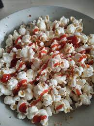

THE KETCHUPPED POPCORN RECIPE

DESCRIPTION
Do you know those someone who puts ketchup on everything? Yeah, they'll flip for this tangy popcorn
Send them this amazing creation from Mbouty or try it yourself
INGREDIENTS
- 3 tbsp ketchup
- 2 tbsp butter
- 1 tbsp granlated sugar
- 1 tsp salt
STEPS
- Pre-heat the oven to 300F.
- Spread popcorn evenly on a large baking sheet.
- In a small saucepan over medium heat, whisk ketchup with butter and sugar until sugar dissolves.
- Drizzle mixture over popcorn, stirring occaionally, until dry and crisp, 12 to 15 min.
- Serve with optional extra coating of ketchup
Return to Homepage